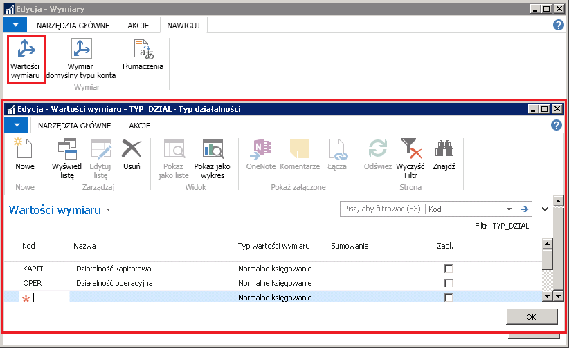
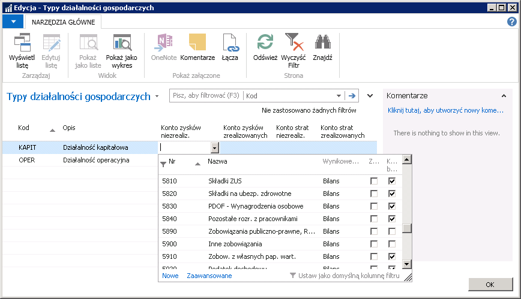
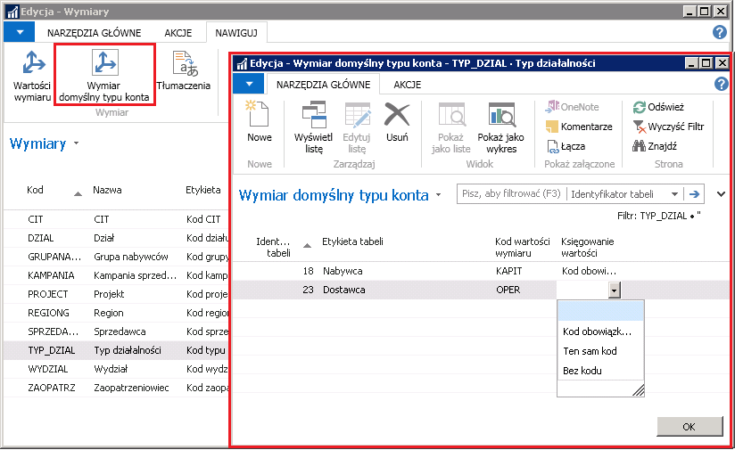
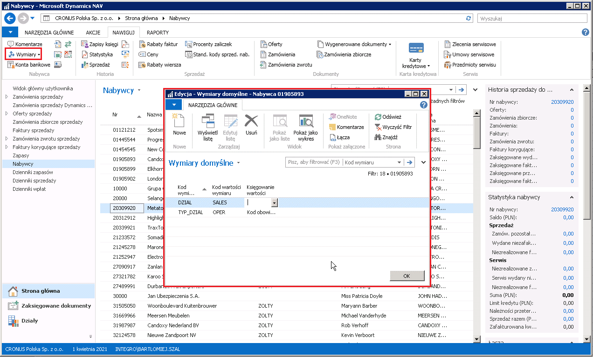
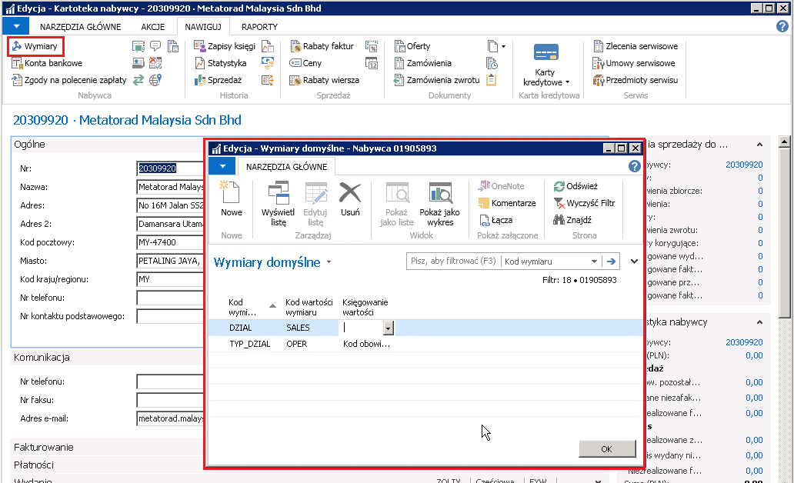
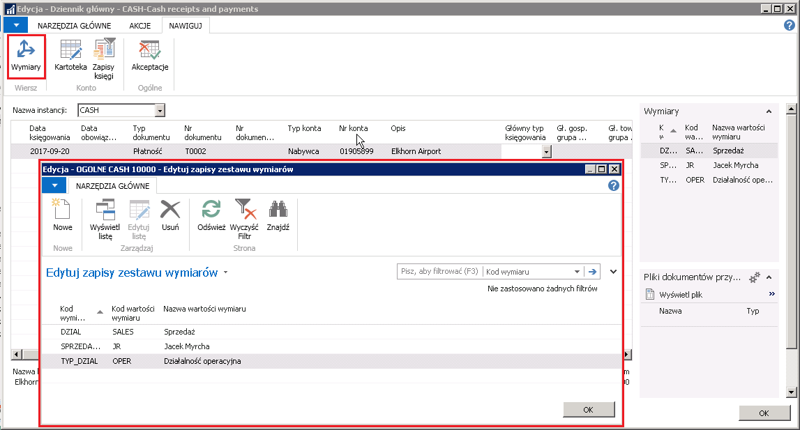
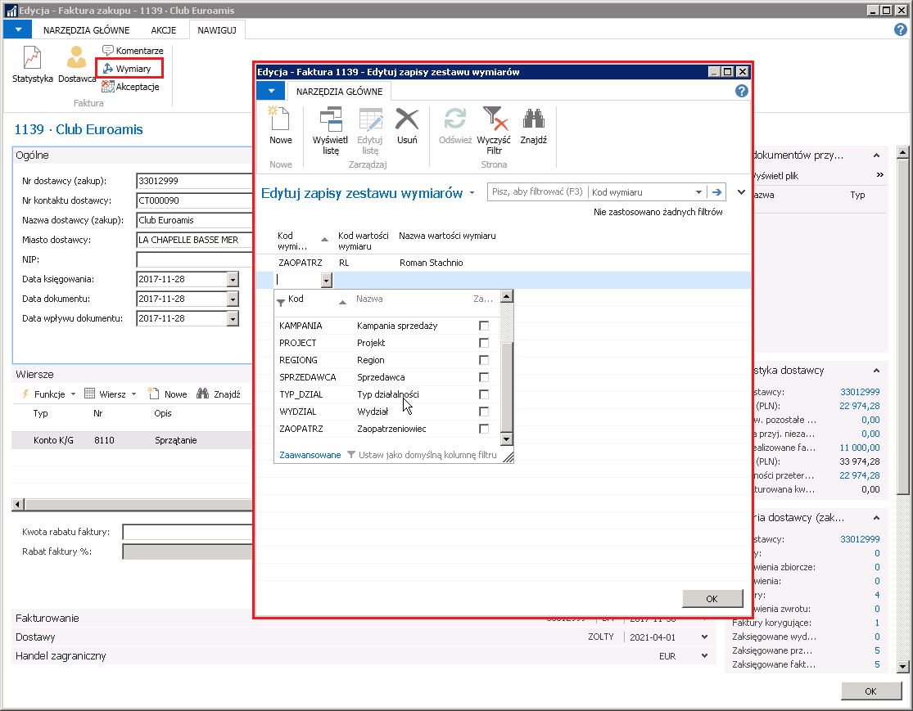
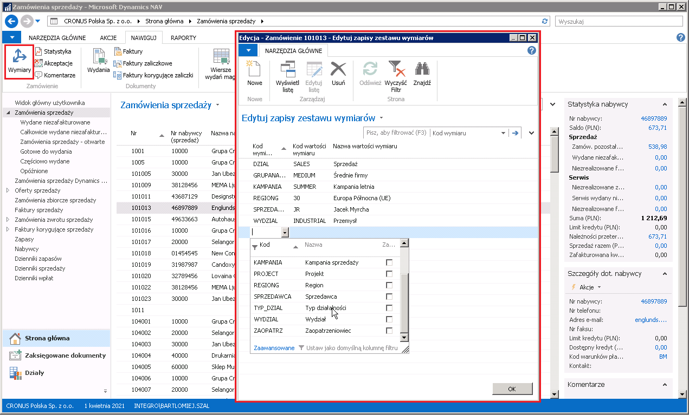

Typy działalności {#typy-działalności .Poziom-1} ––––––––-
Informacje ogólne
Ustawa CIT na rok 2018 wprowadza wymóg podziału wyniku finansowego na część operacyjną i kapitałową, z zakazem kompensaty strat pomiędzy tymi typami działalności. W większości przypadków, podział księgowań pomiędzy typy działalności, może być zrealizowany za pomocą standardowej funkcjonalności systemu Microsoft Dynamics 365 Business Central on‑premises, przy użyciu kont K/G, czy też funkcjonalności wymiarów księgowych. Tego typu podział jest niestety niemożliwy w przypadku księgowań automatycznych związanych z naliczaniem różnic kursowych. W standardzie systemu, konta różnic kursowych są przypisane do waluty. Nie jest zatem możliwe rozdzielenie różnic kursowych, dotyczących różnych typów działalności na odrębne konta księgi głównej. W przypadku wykorzystania wymiarów księgowych, pobierane są one automatycznie z zapisów ksiąg nabywców i dostawców. Użytkownik nie ma możliwości zmiany wartości wymiarów, z jakimi będą zaksięgowane różnice kursowe podczas procesu rozliczania należności i zobowiązań.
Opisana poniżej funkcjonalność umożliwia podział zapisów ksiąg nabywców i dostawców pomiędzy definiowalne przez użytkownika typy działalności. Do typu działalności można przypisać zestaw kont różnic kursowych, co sprawia, iż w przypadku rozliczenia zapisu księgi nabywcy lub dostawcy z określonym typem działalności, konta różnic kursowych nie są pobierane z ustawień waluty, lecz z ustawień typu działalności.
Ustawienia
Z uwagi na to, że do podziału wyniku finansowego wykorzystywana jest standardowa funkcjonalność wymiarów, należy utworzyć nowy, dedykowany, wymiar. W tym celu, należy postępować według następujących kroków:
Należy wybrać Działy > Zarządzanie Finansami > Administracja > Wymiary.
W oknie Wymiary, które się otworzy, należy utworzyć nowy wiersz i wprowadzić Kod, Nazwę oraz pozostałe dane wymiaru, którego wartości będą używane do podziału różnic kursowych.
Należy ustawić kursor w wierszu z nowym wymiarem i na wstążce, na karcie Nawiguj, wybrać Wartości wymiaru.
W oknie Wartości wymiaru, które się otworzy, należy w kolejnych wierszach wprowadzić Kod, Nazwę i pozostałe dane wartości nowego wymiaru.

Aby możliwe było korzystanie z opisywanej funkcjonalności, konieczne jest wskazanie w Ustawieniach księgi głównej nowo utworzonego wymiaru. W tym celu, należy postępować według następujących kroków:
Należy wybrać Działy > Zarządzanie Finansami > Administracja > Ustawienia księgi głównej.
W oknie Ustawienia księgi głównej, które się otworzy, na karcie skróconej Wymiary, w polu Kod wymiaru typu działalności z listy rozwijanej należy wybrać zdefiniowany w poprzednich krokach wymiar.

Po utworzeniu odpowiedniego wymiaru wraz z wartościami, należy zdefiniować konta różnic kursowych. W tym celu, należy postępować według następujących kroków:
Należy wybrać Działy > Zarządzanie Finansami > Administracja > Typy działalności gospodarczych.
W oknie Typy działalności gospodarczych, które się otworzy, należy wybrać właściwe konta księgi głównej, na których księgowane będą zrealizowane i niezrealizowane różnice kursowe związane z wybranymi wartościami wymiaru:
Konto zysków niezrealiz.– w tym polu należy wybrać konto do zaksięgowania niezrealizowanych dodatnich różnic kursowych.
Konto zysków zrealizowanych – w tym polu należy wybrać konto do zaksięgowania zrealizowanych dodatnich różnic kursowych.
Konto strat niezrealiz. – w tym polu należy wybrać konto do zaksięgowania niezrealizowanych ujemnych różnic kursowych.
Konto strat zrealizowanych – w tym polu należy wybrać konto do zaksięgowania zrealizowanych ujemnych różnic kursowych.
Uwaga
W oknie Typy działalności gospodarczych nie można tworzyć nowych wierszy, ponieważ są one zsynchronizowane z wartościami wymiaru wybranego w polu Kod wymiaru typu działalności w oknie Ustawienia księgi głównej.

Obsługa
Dzięki wykorzystaniu wymiarów, przypisywanie odpowiednich typów działalności może odbywać się w wielu miejscach w systemie Microsoft Dynamics 365 Business Central on‑premises. Można przypisać domyślny typ działalności do nabywcy lub dostawcy, do dokumentu sprzedaży lub zakupu, oraz do każdego wiersza dziennika głównego.
Z uwagi na to, że dostawcy i nabywcy mogą mieć przypisane różne typy działalności, może zdarzyć się, że będą wzajemnie rozliczane zapisy księgi nabywców lub dostawców z przypisanymi różnymi typami działalności. W takiej sytuacji do określenia kont różnic kursowych zostanie wykorzystany typ działalności z zapisu rozliczającego.
Można ustawić domyślną wartość wymiaru typu działalności dla danej tabeli w systemie. W tym celu, należy postępować według następujących kroków:
Należy wybrać Działy > Zarządzanie Finansami > Administracja > Wymiary.
W oknie Wymiary, które się otworzy, należy ustawić kursor w wierszu z wybranym wymiarem i na wstążce, na karcie Nawiguj wybrać Wymiar domyślny typu konta.
W oknie Wymiar domyślny typu konta, które się otworzy, należy wypełnić poszczególne pola, w oddzielnym wierszu dla każdej wybranej tabeli:
Identyfikator tabeli – w tym polu należy wybrać z listy rozwijanej tabelę, dla której wybrana wartość wymiaru będzie traktowana jako wartość domyślna.
Kod wartości wymiaru – w tym polu należy wybrać domyślną dla danej tabeli wartość wymiaru.
Księgowanie wartości – w tym polu należy wybrać jedną z opcji:
pusta
Kod obowiązkowy
Ten sam kod
Bez kodu.

Domyślne wartości wymiarów można również przypisywać do kartotek nabywców i dostawców. W tym celu, należy postępować według następujących kroków:
Należy otworzyć kartotekę wybranego nabywcy lub dostawcy i na wstążce wybrać Wymiary
lub
na liście nabywców lub dostawców zaznaczyć wiersze z wybranymi kontrahentami (lub jednym kontrahentem) i na wstążce wybrać Wymiary – zakres (lub Wymiary – wiersz).
W oknie Wymiary domyślne, które się otworzy, należy utworzyć nowy wiersz, wypełniając pola:
Kod wymiaru – w tym polu należy wybrać z listy rozwijanej utworzony wcześniej wymiar.
Kod wartości wymiaru – w tym polu należy wybrać domyślną dla wybranych kontrahentów (lub kontrahenta) wartość wymiaru.
Księgowanie wartości – w tym polu należy wybrać jedną z opcji:
pusta
Kod obowiązkowy
Ten sam kod
Bez kodu.


Typ działalności można również przypisywać bezpośrednio do dokumentu, zarówno w kartotekach dokumentów, jak i w wierszach dzienników. Aby przypisać wartość wymiaru do dokumentu w wierszu dziennika, należy postępować według następujących kroków:
W oknie Dziennik główny należy zaznaczyć wybrany wiersz i na wstążce, na karcie Nawiguj, wybrać Wymiary.
W oknie Edytuj zapisy zestawu wymiarów, które się otworzy, należy ustawić żądaną wartość wymiaru odpowiedzialnego za podział różnic kursowych, wypełniając pola:
Kod wymiaru – w tym polu należy wybrać z listy rozwijanej utworzony wcześniej wymiar.
Kod wartości wymiaru – w tym polu należy wybrać właściwą wartość wymiaru wybranego w polu Kod wymiaru.

W celu przypisania typu działalności do dokumentu, należy postępować według następujących kroków:
Należy otworzyć jedną z list lub kartotek dokumentów sprzedaży lub zakupu.
W oknie, które się otworzy, należy na wstążce, na karcie Nawiguj, wybrać Wymiary.
W oknie Edytuj zapisy zestawu wymiarów, które się otworzy, należy ustawić żądaną wartość wymiaru odpowiedzialnego za podział różnic kursowych, wypełniając pola:
Zapisy zestawu wymiarów faktury zakupów:

Zapisy zestawu wymiarów zamówienia sprzedaży:
